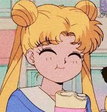
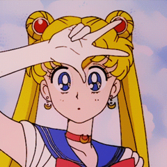

Sailor Moon was the very first sailor scout introduced in the anime series, "Sailor Moon." When first introduced to her powers she was shocked and hysterical. Not only because of the fact that there was a talking cat on her bed, but because she was being told that she must find the legendary princess of the Moon Kingdom.
Before Serena became Sailor Moon, she was an average middle school student in the middle of Japan. She had her average friends and her average school work. Although her average school work ended in either a D or an F, she was admiring the fact that the new video game super heroin Sailor V didn't have to deal with average girl work. She thought being average was the worst thing in the world, and would rather be a super heroin like Sailor V; fighting evil, righting wrongs, having great publicity, and having the spotlight on her 24 hours a day was the way she'd rather go.
Yet when she was introduced her powers she was at first sceptical, I mean a talking cat presenting you with a mission and bestowing upon you powers that you wouldn't have dreamed of. Then she began to go frantic, now that it wasn't a dream then there actually was a talking cat in her room, and now she has to save the world from evil, evil that will surely plunge the world into eternal darkness, not to mention harm her as well. Eventually, Sailor Moon is found to be the lost legendary Moon Princess. None of the other scouts even suspected this, not even Sailor Moon. Although the question comes to mind, why? Not only does Sailor Moon have hidden talent and is the heir to Queen Serenity, she has a kind heart. Even when every one thought differently about someone.